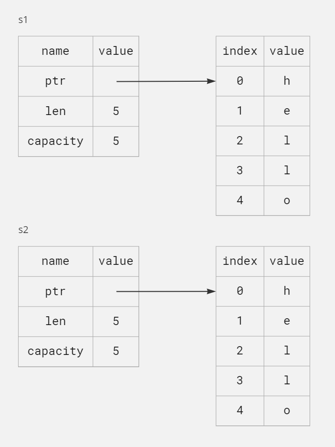
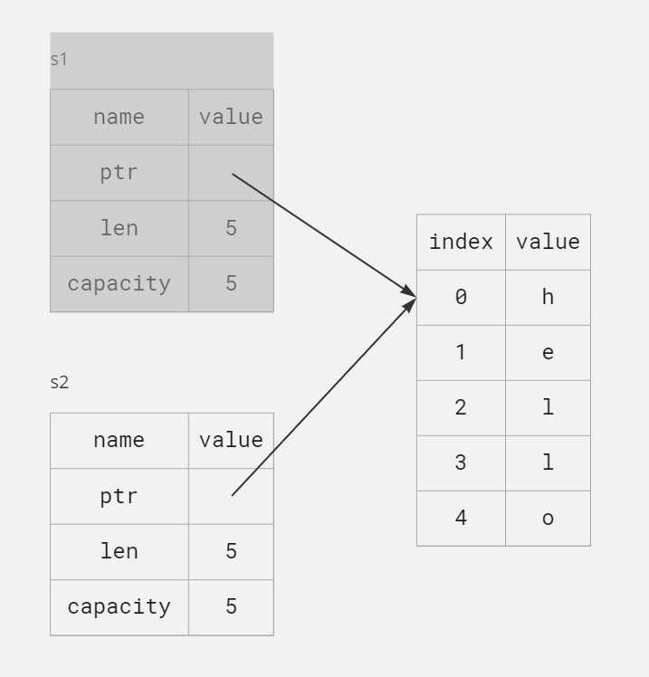

Understanding Ownership
Ownership is Rust's most unique feature and has deep implication for the rest of the language. It enables Rust to make memory safety guarantees without needing a garbage collector, so it's important to understand how ownership works. In this chapter, we'll talk about ownership as well as several related features: borrowing, slices, and how Rust lays data out in memory.
What is Ownership?
Ownership is a set of rules that govern how a Rust program manages memory. All programs have to manage the way they use a computer's memory while running. Some languages have garbage collection that regularly looks for no-longer-used memory as the program runs; in other languages, the programmer must explicitly allocate and free the memory. Rust uses a third approach: memory is managed through a system of ownership with a set of rules that the compiler checks. If any of the rules are violated, the program won't compile. None of the features of ownership will slow down your program while it's running.
Because ownership is a new concept for many programmers, it does take some time to get used to. The good news is that the more experienced you become with Rust and the rules of the ownership system, the easier you'll find it to naturally deveop code that is safe and efficient. Keep at it!
When you understand ownership, you'll have a solid foundation for understanding the features that make Rust unique. In this chapter, you'll learn ownership by working through some examples that focus on a very common data structures: strings.
The Stack and the Heap
Many programming languages doesn't require you to think about the stack and the heap very often. But in a systems programming language like Rust, whether a value is on the stack or the heap affects how the language behaves and why you have to make certain decisions. Parts of ownership will be described in relation to the stack and the heap later in this chapter, so here is a brief explanation in preparation.
Both the stack and the heap are parts of memory available to your code to use at runtime, but they are structured in different ways. The stack stores values in the order it gets them and removes the values in the opposite order. This is referred to as last in, first out. Adding data is called pushing onto the stack, and removing data is called popping off the stack. All data stored on the stack must have a known, fixed size. Data with an unknown size at compile time or a size that might change must be stored on the heap instead.
The heap is less organized: when you put data on the heap, you request a certain amount of space. They memory allocator finds an empty spot in the heap that is big enough, marks it as being in use, and returns a pointer, which is the address of that location. This process is called allocating on the heap and is sometimes abbreviated as just allocating (pushing values onto the stack is not considered allocating). Because the pointer to the heap is a known, fixed size, you can store the pointer on the stack, but when you want the actual data, you must follow the pointer.
Pushing to the stack is faster than allocating on the heap because the allocator never has to search for a place to store new data; that location is always at the top of the stack. Comparatively, allocating space on the heap requires more work because the allocator must first find a big enough space to hold the data and then perform bookkeeping to prepare for the next allocation.
Accessing data in the heap is slower than accessing data on the stack because you have to follow a pointer to get there. Contemporary processors are faster if they jump around less in memory. A processor can do its job better if it works on data that's close to other data (as it is on the stack) rather than farther away (as it can be on the heap).
When your code calls a function, the values passed in to the function (including, potentially, pointers to data on the heap) and the function's local variable get pushed onto the stack. When the function is over, those values get popped off the stack.
Keeping track of what parts of code are using what data on the heap, minimizing the amount of duplicate data on the heap, and cleaning up unused data on the heap so you don't run out of space are all problems that ownership addresses. Once you understand ownership, you won't need to think about the stack and the heap very often, but knowing that the main purpose of ownership is to manage heap data can help explain why it works the way it does.
Ownership Rules
First, let's take a look at the ownership rules. Keep these rules in mind as we work through the examples that illustrate them:
- Each value in Rust has an owner.
- There can only be one owner at a time.
- When the owner goes out of scope, the value will be dropped.
Variable Scope
Now that we're past basic Rust syntax, we won't include all the fn main() { code in examples, so if you're following
along, make sure to put the following examples inside a main function manually. As a result, our examples will be a
bit more concise, letting us focus on the actual details rather than boilerplate code.
As a first example of ownership, we'll look at the scope of some variables. A scope is the range within a program for which an item is valid.
fn main() {
let s = "hello";
}The variable s refers to a string literal, where the value of the string is hardcoded into the text of our program.
The variable is valid from the point at which it's declared until the end of the current scope.
fn main() {
{ // s is not valid here, since it's not yet declared
let s = "hello"; // s is valid from this point forward
// do stuff with s
} // this scope is now over, and s is no longer valid
}In other words, there are two important points in time here:
- When
scomes into scope, it is valid. - It remains valid until it goes out of scope.
At this point, the relationship between scopes and when variables are valid is similar to that in other programming
languages. Now we'll build on top of this understanding by introducing the String type.
The String Type
To illustrate the rules of ownership, we need a data type that is more complex than those we covered in "Data Types".
The types covered previously are of a known size, can be stored on the stack and popped off the stack when their scope
is over, and can be quickly and trivially copied to make a new, independent instance if another part of code needs to
use the same value in a different scope. But we want to look at data that is stored on the heap and explore how Rust
knows when to clean up that data, and the String type is a great example.
We'll concentrate on the parts of String that relate to the ownership. These aspects also apply to other complex data
types, whether they are provided by the standard library or created by you. We'll discuss String in more depth in
Chapter 8.
We've already seen string literals, where a string value is hardcoded into our program. String literals are convenient,
but they aren't suitable for every situation in which we may want to use text. One reason is that they're immutable.
Another is that not every string value can be known when we write our code: for example, what if we want to take user
input and store it? For these situations, Rust has a second string type, String. This type manages data allocated on
the heap and as such is able to store an amount of text that is unknown to us at compile time. You can create a String
from a string literal using the from function, like so:
fn main() {
let s = String::from("hello");
}The double colon :: operator allows us to namespace this particular from function under the String type rather
than using some sort of name like string_from. We'll discuss this syntax more in "Method Syntax", and when we talk
about namespacing with modules in "Paths for Referring to an Item in the Module Tree".
This kind of string can be mutated:
fn main() {
let mut s = String::from("hello");
s.push_str(", world!"); // push_str() appends a literal to a String
println!("{s}"); // this will print `hello, world!`
}So, what's the difference here? Why can String be mutated but literals cannot? The difference is in how these two
types deal with memory.
Memory and Allocation
In the case of a string literal, we know the contents at compile time, so the text is hardcoded directly into the final executable. This is why string literals are fast and efficient. But these properties only come from the string literal's immutability. Unfortunately, we can't put a blob of memory into the binary for each piece of text whose size is unknown at compile time and whose size might change while running the program.
With the String type, in order to support a mutable, growable piece of text, we need to allocate an amount of memory
on the heap, unknown at compile time, to hold the contents. This means:
- The memory must be requested from the memory allocator at runtime.
- We need a way of returning this memory to the allocator when we're done with our
String.
That first part is done by us: when we call String::from, its implementation request the memory it needs. This is
pretty much universal in programming languages.
However, the second part is different. In languages with a garbage collector(GC), the GC keeps track of and cleans up
memory that isn't being used anymore, and we don't need to think about it. In most languages without a GC, it's our
responsibility to identify when memory is no longer being used and to call code to explicitly free it, just as we did to
request it. Doing this correctly has historically been a difficult programming problem. If we forget, we'll waste
memory. If we do it too early, we'll have an invalid variable. If we do it twice, that's a bug too. We need to pair
exactly one allocate with exactly one free.
Rust takes a different path: the memory is automatically returned once the variable that owns it goes out of scope.
Here's a version of our scope example using a String instead of a string literal:
fn main() {
{
let s = String::from("hello"); // s is valid from this point forward
// do stuff with s
} // this scope is now over, and s is no longer valid
}There is a natural point at which we can return the memory our String needs to the allocator: when s goes out of
scope. When a variable goes out of scope, Rust calls a special function for us. This function is called drop, and it's
where the author of String can put the code to return the memory. Rust calls drop automatically at the closing curly
bracket.
In C++, this pattern of deallocating resources at the end of an item's lifetime is sometimes called Resource Acquisition is Initialization (RAII). The
dropfunction in Rust will be familiar to you if you've used RAII patterns.
This pattern has a profound impact on the way Rust code is written. It may seem simple right now, but the behavior of code can be unexpected in more complicated situations when we want to have multiple variables use the data we've allocated on the heap. Let's explore some of those situations now.
Variables and Data Interacting with Move
Multiple variables can interact with the same data in different ways in Rust.
fn main() {
let x = 5;
let y = x;
}We can probably guess what this is doing: "bind the value 5 to x; then make a copy of the value in x and bind it
to y." We now have two variables, x and y, and both equal 5. This is indeed what is happening, because integers
are simple values with a known, fixed size, and these two 5 values are pushed onto the stack.
Now let's look at the String version:
fn main() {
let s1 = String::from("hello");
let s2 = s1;
}This looks very similar, so we might assume that the way it works would be the same: that is, the second line would make
a copy of the value in s1 and bind it to s2. But this isn't quite what happens.
Take a look at Figure to see what is happening to String under the covers. A String is made up of three parts, shown
on the left: a pointer to the memory that holds the contents of the string, a length, and a capacity. This group of data
is stored on the stack. On the right is the memory on the heap that holds the contents.

- Figure 4-1: Representation in memory of a
Stringholding the value"hello"bound tos1
The length is how much memory, in bytes, the contents of the String are currently using. The capacity is the total
amount of memory, in bytes, that the String has received from the allocator. The difference between length and
capacity matters, but not in this context, so for now, it's fine to ignore the capacity.
When we assign s1 to s2, the String data is copied, meaning we copy the pointer, the length, and the capacity that
are on the stack. We do not copy the data on the heap that the pointer refers to. In other words, the data
representation in memory looks like this.

- Figure 4-2: Representation in memory of the variable
s2that has a copy of the pointer, length, and capacity ofs1
The representation does not look like Figure 4-3, which is what memory would look like if Rust instead copied the heap
data as well. If Rust did this, the operation s2 = s1 could be very expensive in terms of runtime performance if the
data on the heap were large.

- Figure 4-3: Another possibility for what
s2 = s1might do if Rust copied the heap data as well
Earlier, we said that when a variable goes out of scope, Rust automatically calls the drop function that cleans up the
heap memory for that variable. But Figure 4-2 shows both data pointers pointing to the same location. This is a problem:
when s2 and s1 go out of scope they will both try to free the same memory. This is known as a double free error and
is one of the memory safety bugs we mentioned previously. Freeing memory twice can lead to memory corruption, which can
potentially lead to security vulnerabilities.
To ensure memory safety, after the line let s2 = s1;, Rust considers s1 as no longer valid. Therefore, Rust doesn't
need to free anything when s1 goes out of scope. Check out what happens when you try to use s1 after s2 is
created; it won't work:
fn main() { let s1 = String::from("hello"); let s2 = s1; println!("{s1}, world!"); }
You'll get an error like this because Rust prevents you from using the invalidated reference:
error[E0382]: borrow of moved value: `s1`
--> src\main.rs:5:16
|
2 | let s1 = String::from("hello");
| -- move occurs because `s1` has type `String`, which does not implement the `Copy` trait
3 | let s2 = s1;
| -- value moved here
4 |
5 | println!("{s1}, world!");
| ^^ value borrowed here after move
|
If you've heard the terms shallow copy and deep copy while working with other languages, the concept of copying the
pointer, length, and capacity without copying the data probably sounds like making a shallow copy. But because Rust also
invalidates the first variable, instead of being called a shallow copy, it's known as a move. In this example, we would
say that s1 was moved into s2. So, what actually happens is shown in Figure 4-4.

That solves our problem! With only s2 valid, when it goes out of scope it alone will free the memory, and we're done.
In addition, there's a design choice that's implied by this: Rust will never automatically create "deep" copies of your data. Therefore, any automatic copying can be assumed to be inexpensive in terms of runtime performance.
Variables and Data Interacting with Clone
If we do want to deeply copy the heap data of the String, not just the stack data, we can use a common method
called clone. We'll discuss method syntax in Chapter 5, but because methods are a common feature in many programming
languages, you've probably seen them before.
Here's an example of the clone method in action:
fn main() { let s1 = String::from("hello"); let s2 = s1.clone(); println!("s1 = {s1}, s2 = {s2}"); }
This works just the fine and explicitly produces the behavior shown in Figure 4-3, where the heap data does get copied.
When you see a call to clone, you know that some arbitrary code is being executed and that code may be expensive. It's
a visual indicator that something different is going on.
Stack-Only Data: Copy
There's another wrinkle we haven't talked about yet. This code using integers works and is valid:
fn main() { let x = 5; let y = x; println!("x = {x}, y = {y}"); }
But this code seems to contradict what we just learned: we don't have a call to clone, but x is still valid and
wasn't moved into y.
The reason is that types such as integers that have a known size at compile time are stored entirely on the stack, so
copies of the actual values are quick to make. That means there's no reason we would want to prevent x from being
valid after we create the variable y. In other words, there's no difference between deep and shallow copying here, so
calling clone wouldn't do anything different from the usual shallow copying, and we can leave it out.
Rust has a special annotation called the Copy trait that we can place on types that are stored on the stack, as
integers are (we'll talk more about traits in Chapter 10). If a type implements the Copy trait, variables that use it
do not move, but rather are trivially copied, making them still valid after assignment to another variable.
Rust won't let us annotate a type with Copy if the type, or any of its parts, has implemented the Drop trait. If the
type needs something special to happen when the value goes out of scope and we add the Copy annotation to that type,
we'll get a compile-time error. To learn about how to add the Copy annotation to your type to implement the trait, see
Appendix C.
So, what types implement the Copy trait? You can check the documentation for the given type to be sure, but as a
general rule, any group of simple scalar values can implement Copy, and nothing that requires allocation or is some
form of resource can implement Copy. Here are some of the types that implement Copy:
- All the integer types, such as
u32. - The Boolean type,
bool, with valuestrueand `false. - All the floating-point types, such as
f64. - The character type,
char. - Tuples, if they only contain types that also implement
Copy. For example, (i32,i32) implementsCopy, but (i32,String) does not.
Ownership and Functions
The mechanics of passing a value to a function are similar to those when assigning a value to a variable. Passing a variable to a function will move or copy, just as assignment does. Here's an example with some annotations showing where variables go into and out of scope.
fn main() { let s = String::from("hello"); // s comes into scope takes_ownership(s); // s's value moves into the function... // ... and so is no longer valid here let x = 5; // x comes into scope makes_copy(x); // x would move into the function, // but `i32` is Copy, so it's okay to still // use x afterward } // Here, x goes out of scope, then s. However, because s's value was moved, // nothing special happens. fn takes_ownership(some_string: String) { // some_string comes into scope println!("{some_string}"); } // Here, some_string goes out of scope and `drop` is called. The backing // memory is free. fn makes_copy(some_integer: i32) { // some_integer comes into scope println!("{some_integer}"); } // Here, some_integer goes out of scope. Nothing special happens.
If we tried to use s after the call to takes_ownership, Rust would throw a compile-time error. These static checks
protect us from mistakes. Try adding code to main that uses s and x to see where you can use them and where the
ownership rules prevent you from doing so.
Return Values and Scope
Returning values can also transfer ownership. Shows an example of a function that returns some value, with similar annotations as those in last example.
fn main() { let s1 = gives_ownership(); // gives_ownership moves its return // value into s1 let s2 = String::from("hello"); // s2 comes into scope let s3 = takes_and_gives_back(s2); // s2 is moved into // takes_and_gives_back, which also // moves its return value into s3 } // Here, s3 goes out of scope and is dropped. s2 was moved, so nothing // happens. s1 goes out of scope and is dropped. fn gives_ownership() -> String { // gives_ownership will move its // return value into the function // that calls it let some_string = String::from("yours"); // some_string comes into scope some_string // some_string is returned and // moves out to the calling // function } // This function takes a String and returns a String. fn takes_and_gives_back(a_string: String) -> String { // a_string comes into scope a_string // a_string is returned and moves out to the calling function }
The ownership of a variable follows the same pattern every time: assigning a value to another variable moves it. When a
variable that includes data on the heap goes out of scope, the value will be cleaned up by drop unless ownership of
the data has been moved to another variable.
While this works, taking ownership and then returning ownership with every function is a bit tedious. What if we want to let a function use a value but not take ownership? It's quite annoying that anything we pass in also needs to be passed back if we want to use it again, in addition to any data resulting from the body of the function that we might want to return as well.
Rust does let us return multiple values using a tuple:
fn main() { let s1 = String::from("hello"); let (s2, len) = calculate_length(s1); println!("The length of '{s2}' is {len}."); } fn calculate_length(s: String) -> (String, usize) { let length = s.len(); // len() returns the length of a String (s, length) }
Listing 4-5: Returning ownership of parameters
But this is too much ceremony and a lot of work for a concept that should be common. Luckily for us, Rust has a feature for using a value without transferring ownership, called references.
References and Borrowing
The issue with the tuple code in Listing 4-5 is that we have to return the String to the calling function so we can
still use the String after the call to calculate_length, because the String was moved into calculate_length.
Instead, we can provide a reference to the String value. A reference is like a pointer in that it's an address we can
follow to access the data stored at that address; that data is owned by some other variable. Unlike a pointer, a
reference is guaranteed to point to a valid value of a particular type for the life of that reference.
Here is how you would define and use a calculate_length function that has a reference to an object as a parameter
instead of taking ownership of the value:
fn main() { let s1 = String::from("hello"); let len = calculate_length(&s1); println!("The length of '{s1}' is {len}."); } fn calculate_length(s: &String) -> usize { s.len() }
First, notice that all the tuple code in the variable declaration and the function return value is gone. Second, note
that we pass &s1 into calculate_length and, in its definition, we take &String rather than String. These
ampersands represent references, and they allow you to refer to some value without taking ownership of it. Figure 4-5
depicts this concept.

- Figure 4-5: A diagram of
&String spointing atString s1
The opposite of referencing by using
&is dereferencing, which is accomplished with the dereference operator,*. We'll see some uses of the dereference operator in Chapter 8 and discuss details of dereferencing in Chapter 15.
Let's take a closer look at the function call here:
fn main() {
let s1 = String::from("hello");
let len = calculate_length(&s1);
}The &s1 syntax lets us create a reference that refers to the value of s1 but does not own it. Because it does not
own it, the value it points to will not be dropped when the reference stops being used.
Likewise, the signature of the function uses & to indicate that the type of the parameter s is a reference. Let's
add some explanatory annotations:
fn calculate_length(s: &String) -> usize { // s is a reference to a String
s.len()
} // Here, s goes out of scope. But because it does not have ownership of what
// it refers to, the String is not dropped.The scope in which the variable s is valid is the same as any function parameter's scope, but the value pointed to by
the reference is not dropped when s stops being used, because s doesn't have ownership. When functions have
references as parameters instead of the actual values, we won't need to return the values in order to give back
ownership, because we never had ownership.
We call the action of creating a reference borrowing. As in real life, if a person owns something, you can borrow it from them. When you're done, you have to give it back. You don't own it.
So, what happens if we try to modify something we're borrowing? Try the code in Listing 4-6. Spoiler alert: it doesn't work!
fn main() {
let s = String::from("hello");
change(&s);
}
fn change(some_string: &String) {
some_string.push_str(", world");
}- Listing 4-6: Attempting to modify a borrowed value
Here's the error:
error[E0596]: cannot borrow `*some_string` as mutable, as it is behind a `&` reference
--> src\main.rs:8:5
|
7 | fn change(some_string: &String) {
| ------- help: consider changing this to be a mutable reference: `&mut String`
8 | some_string.push_str(", world");
| ^^^^^^^^^^^^^^^^^^^^^^^^^^^^^^^ `some_string` is a `&` reference, so the data it refers to cannot be borrowed as mutable
Just as variables are immutable by default, so are references. We're not allowed to modify something we have a reference to.
Mutable References
We can fix the code from Listing 4-6 to allow us to modify a borrowed value with just a few small tweaks that use, instead, a mutable reference:
fn main() { let mut s = String::from("hello"); change(&mut s); } fn change(some_string: &mut String) { some_string.push_str(", world"); }
First we change s to be mut. Then we create a mutable reference with &mut s where we call the change function,
and update the function signature to accept a mutable reference with some_string: &mut String. This makes it very
clear that the change function will mutate the value it borrows.
Mutable references have one big restriction: if you have a mutable reference to a value, you can have no other
references to that value. This code that attempts to create two mutable references to s will fail:
fn main() {
let mut s = String::from("hello");
let r1 = &mut s;
let r2 = &mut s;
println!("{r1}, {r2}");
}Here's the error:
error[E0499]: cannot borrow `s` as mutable more than once at a time
--> src\main.rs:15:14
|
14 | let r1 = &mut s;
| ------ first mutable borrow occurs here
15 | let r2 = &mut s;
| ^^^^^^ second mutable borrow occurs here
16 |
17 | println!("{r1}, {r2}");
| -- first borrow later used here
This error says that this code is invalid because we cannot borrow s as mutable more than once at a time. The first
mutable borrow is in r1 and must last until it's used in the println!, but between the creation of that mutable
reference and its usage, we tried to create another mutable reference in r2 that borrows the same data as r1.
The restriction preventing multiple mutable references to the same data at the same time allows for mutation but in a very controlled fashion. It's something that new Rustaceans struggle with because most languages let you mutate whenever you'd like. The benefit of having this restriction is that Rust can prevent data races at compile time. A data race is similar to a race condition and happens when these three behaviors occur:
- Two or more pointers access the same data at the same time.
- At least one of the pointers is being used to write to the data.
- There's no mechanism being used to synchronize access to the data.
Data races cause undefined behavior and can be difficult to diagnose and fix when you're trying to track them down at runtime; Rust prevents this problem by refusing to compile code with data races!
As always, we can use curly brackets to create a new scope, allowing for multiple mutable references, just not simultaneous ones:
fn main() {
let mut s = String::from("hello");
{
let r1 = &mut s;
} // r1 goes out of scope here, so we can make a new reference with no problems
let r2 = &mut s;
}Rust enforces a similar rule for combining mutable and immutable references. This code results in an error:
fn main() {
let mut s = String::from("hello");
let r1 = &s; // no problem
let r2 = &s; // no problem
let r3 = &mut s; // BIG PROBLEM
println!("{r1}, {r2}, and {r3}");
}Here's the error:
error[E0502]: cannot borrow `s` as mutable because it is also borrowed as immutable
--> src\main.rs:25:14
|
23 | let r1 = &s; // no problem
| -- immutable borrow occurs here
24 | let r2 = &s; // no problem
25 | let r3 = &mut s; // BIG PROBLEM
| ^^^^^^ mutable borrow occurs here
26 |
27 | println!("{r1}, {r2}, and {r3}");
| -- immutable borrow later used here
Whew! We also cannot have a mutable reference while we have an immutable one to the same value.
Users of an immutable reference don't expect the value to suddenly change out from under them! However, multiple immutable references are allowed because no one who is just reading the data has the ability to affect anyone else's reading of the data.
Note that a reference's scope starts from where it is introduced and continues through the last time that reference is
used. For instance, this code will compile because the last usage of the immutable references, the println!, occurs
before the mutable reference is introduced:
fn main() { let mut s = String::from("hello"); let r1 = &s; // no problem let r2 = &s; // no problem println!("{r1} and {r2}"); // Variables r1 and r2 will not be used after this point. let r3 = &mut s; // no problem println!("{r3}"); }
The scopes of the immutable references r1 and r2 end after the println! where they are last used, which is before
the mutable reference r3 is created. These scopes don't overlap, so this code is allowed: the compiler can tell that
the reference is no longer being used at a point before the end of the scope.
Even though borrowing errors may be frustrating at times, remember that it's the Rust compiler pointing out a potential bug early (at compile time rather than at runtime) and showing you exactly where the problem is. Then you don't have to track down why your data isn't what you thought it was.
Dangling References
In languages with pointers, it's easy to erroneously create a dangling pointer - a pointer that references a location in memory that may have been given to someone else - by freeing some memory while preserving a pointer to that memory. In Rust, by contrast, the compiler guarantees that references will never be dangling references: if you have a reference to some data, the compiler will ensure that the data will not go out of scope before the reference to the data does.
Let's try to create a dangling reference to see how Rust prevents them with a compile-time error:
fn main() { let reference_to_nothing = dangle(); } fn dangle() -> &String { let s = String::from("hello"); &s }
Here's the error:
error[E0106]: missing lifetime specifier
--> src\main.rs:34:16
|
34 | fn dangle() -> &String {
| ^ expected named lifetime parameter
|
= help: this function's return type contains a borrowed value, but there is no value for it to be borrowed from
help: consider using the `'static` lifetime
|
34 | fn dangle() -> &'static String {
| +++++++
This error message refers to a feature we haven't covered yet: lifetimes. We'll discuss lifetimes in detail in Chapter
- But, if you disregard the parts about lifetimes, the message does contain the key to why this code is a problem:
this function's return type contains a borrowed value,
but there is no value for it to be borrowed from
Let's take a closer look at exactly what's happening at each stage of our dangle code:
fn main() {
let reference_to_nothing = dangle();
}
fn dangle() -> &String { // dangle returns a reference to a String
let s = String::from("hello"); // s is a new String
&s // we return a reference to the String, s
} // Here, s goes out of scope and is dropped, so its memory goes away.
// Danger!Because s is created inside dangle, when the code of dangle is finished, s will be deallocated. But we tried to
return a reference to it. That means this reference would be pointing to an invalid String. That's no good! Rust won't
let us do this.
The solution here is to return the String directly:
fn main() { let reference_to_nothing = dangle(); } fn dangle() -> String { let s = String::from("hello"); s }
This works without any problems. Ownership is moved out, and nothing is deallocated.
The Rules of References
Let's recap what we've discussed about references:
- At any given time, you can have either one mutable reference or any number of immutable references.
- References must always be valid.
Next, we'll look at a different kind of reference: slices.
The Slice Type
Slices let you reference a contiguous sequence of elements in a collection rather than the whole collection. A slice is a kind of reference, so it does not have ownership.
Here's a small programming problem: write a function that takes a string of words separated by spaces and returns the first word it finds in that string. If the function doesn't find a space in the string, the whole string must be one word, so the entire string should be returned.
Let's work through how we'd write the signature of this function without using slices, to understand the problem that slices will solve:
fn first_word(s: &String) -> ?The first_word function has a parameter of type &String. We don't want ownership, so this is fine. But what should
we return? We don't really have a way to talk about part of a string. However, we could return the index of the end of
the word, indicated by a space. Let's try that, as shown in Listing 4-7.
fn main() { let string = String::from("hello, world!"); let first_word = first_word(&string); println!("{first_word}"); } fn first_word(s: &String) -> usize { // 1 let bytes = s.as_bytes(); for (i, &item) in bytes.iter().enumerate() { // 2, 3 if item == b' ' { // 4 return i; } } s.len() // 5 }
- Listing 4-7: The
first_wordfunction that returns a byte index value into theStringparameter
Because we need to go through the String element by element and check whether a value is a space, we'll convert
our String to an array of bytes using the as_bytes method (1).
Next, we create an iterator over the array of bytes using the iter method (3). We'll discuss iterators in more detail
in Chapter 13. For now, know that iter is a method that returns each element in a collection and that enumerate
wraps the result of iter and returns each element as part of a tuple instead. The first element of the tuple returned
from enumerate is the index, and the second element is a reference to the element. This is a bit more convenient than
calculating the index ourselves.
Because the enumerate method returns a tuple, we can use patterns to destructure that tuple. We'll be discussing
patterns more in Chapter 6. In the for loop, we specify a pattern that has i for the index in the tuple and &item
for the single byte in the tuple (2). Because we get a reference to the element from .iter().enumerate(), we use &
in the pattern.
Inside the for loop, we search for the byte that represents the space by using the byte literal syntax (4). If we find
a space, we return the position. Otherwise, we return the length of the string by using s.len() (5).
We now have a way to find out the index of the end of the first word in the string, but there's a problem. We're
returning a usize on its own, but it's only a meaningful number in the context of the &String. In other words,
because it's a separate value from the String, there's no guarantee that it will still be valid in the future.
Consider the program in Listing 4-8 that uses the first_word function from Listing 4-7.
fn main() {
let mut s = String::from("hello world");
let word = first_word(&s); // word will get the value 5
s.clear(); // this empties the String, making it equal to ""
// word still has the value 5 here, but there's no more string that
// we could meaningfully use the value 5 with. word is not totally invalid!
}- Listing 4-8: Storing the result from calling the
first_wordfunction and then changing theStringcontents
This program compiles without any errors and would also do so if we used word after calling s.clear().
Because word isn't connected to the state of s at all, word still contains the value 5. We could use that
value 5 with the variable s to try to extract the first word out, but this would be a bug because the contents
of s have changed since we saved 5 in word.
Having to worry about the index in word getting out of sync with the data in s is tedious and error prone! Managing
these indices is even more brittle if we write a second_word function. Its signature would have to look like this:
fn second_word(s: &String) -> (usize, usize) {Now we're tracking a starting and an ending index, and we have even more values that were calculated from data in a particular state but aren't tied to that state at all. We have three unrelated variables floating around that need to be kept in sync.
Luckily, Rust has a solution to this problem: string slices.
String Slices
A string slice is a reference to part of a String, and it looks like this:
fn main() {
let s = String::from("hello world");
let hello = &s[0..5];
let world = &s[6..11];
}Rather than a reference to the entire String, hello is a reference to a portion of the String, specified in the
extra [0..5] bit. We create slices using a range within brackets by specifying [starting_index..ending_index],
where starting_index is the first position in the slice and ending_index is one more than the last position in the
slice. Internally, the slice data structure stores the starting position and the length of the slice, which ccorresponds
to ending_index minus starting_index. So, in the case of let world = &s[6..11]; world would be a slice that
contains a pointer to the byte at index 6 of s with a length value of 5.

- Figure 4-6: String slice referring to part of a
String
With Rust's .. range syntax, if you want to start at index 0, you can drop the value before the two periods. In other
words, these are equal:
fn main() {
let s = String::from("hello");
let slice = &s[0..2];
let slice = &s[..2];
}By the same token, if your slice includes the last byte of the String, you can drop the trailing number. That means
these are equal:
fn main() {
let s = String::from("hello");
let len = s.len();
let slice = &s[3..len];
let slice = &s[3..];
}You can also drop both values to take a slice of the entire string. So these are equal:
fn main() {
let s = String::from("hello");
let len = s.len();
let slice = &s[0..len];
let slice = &s[..];
}String slice range indices must occur at value UTF-8 character boundaries. If you attempt to create a string slice in the middle of a multibyte character, your program will exit with an error. For the purposes of introducing string slices, we are assuming ASCII only in this section; a more through discussion of UTF-8 handling is in "Storing UTF-8 Encoded Text with Strings".
With all this information in mind, let's rewrite first_word to return a slice. The type that signifies "string slice"
is written as &str:
fn first_word(s: &String) -> &str {
let bytes = s.as_bytes();
for (i, &item) in bytes.iter().enumerate() {
if item == b' ' {
return &s[o..i];
}
}
&s[..]
}We get the index for the end of the word the same way we did in Listing 4-7, by looking for the first occurrence of a space. When we find a space, we return a string slice using the start of the string and the index of the space as the starting and ending indices.
Now when we call first_word, we get back a single value that is tied to the underlying data. The value is made up of a
reference to the starting point of the slice and the number of elements in the slice.
Returning a slice would also work for a second_word function:
fn second_word(s: &String) -> &str {We now have a straightforward API that's much harder to mess up because the compiler will ensure the references into
the String remain valid. Remember the bug in the program in Listing 4-8, when we got the index to the end of the first
word but then cleared the string so our index was invalid? That code was logically incorrect but didn't show any
immediate errors. The problems would show up later if we kept trying to use the first word index with an emptied string.
Slices make this bug impossible and let us know we have a problem with our code much sooner. Using the slice version
of first_word will throw a compile-time error:
fn first_word(s: &String) -> &str {
let bytes = s.as_bytes();
for (i, &item) in bytes.iter().enumerate() {
if item == b' ' {
return &s[0..i];
}
}
&s[..]
}
fn main() {
let mut s = String::from("hello world");
let word = first_word(&s);
s.clear(); // error!
println!("the first word is: {word}");
}Here's the compiler error:
error[E0502]: cannot borrow `s` as mutable because it is also borrowed as immutable
--> src\main.rs:17:5
|
15 | let word = first_word(&s);
| -- immutable borrow occurs here
16 |
17 | s.clear(); // error!
| ^^^^^^^^^ mutable borrow occurs here
18 |
19 | println!("the first word is: {word}");
| ---- immutable borrow later used here
Recall from the borrowing rules that if we have an immutable reference to something, we cannot also take a mutable
reference. Because clear needs to truncate the String, it needs to get a mutable reference. The println! after the
call to clear uses the reference in word, so the immutable reference must still be active at that point. Rust
disallows the mutable reference in clear and the immutable reference in word from existing at the same time, and
compilation fails. Not only has Rust made our API easier to use, but it has also eliminated an entire class of errors at
compile time!
String Literals as Slices
Recall that we talked about string literals being stored inside the binary. Now that we know about slices, we can properly understand string literals:
let s = "Hello, world!";The type of s here is &str: it's a slice pointing to that specific point of the binary. This is also why string
literals are immutable; &str is an immutable reference.
String Slices as Parameters
Knowing that you can take slices of literals and String values leads us to one more improvement on first_word, and
that's its signature:
fn first_word(s: &String) -> &str {A more experienced Rustacean would write the signature shown in Listing 4-9 instead because it allows us to use the same
function on both &String values and &str values.
fn first_word(s: &str) -> &str {- Listing 4-9: Improving the
first_wordfunction by using a string slice for the type of thesparameter
If we have a string slice, we can pass that directly. If we have a String, we can pass a slice of the String or a
reference to the String. This flexibility takes advantage of deref coercions, a feature we will cover in "Implicit
Deref Coercions with Functions and Methods".
Defining a function to take a string slice instead of a reference to a String makes our API more general and useful
without losing any functionality:
fn first_word(s: &str) -> &str { let bytes = s.as_bytes(); for (i, &item) in bytes.iter().enumerate() { if item == b' ' { return &s[0..i]; } } &s[..] } fn main() { let my_string = String::from("hello world"); // `first_word` works on slices of `String`s, whether partial or whole. let word = first_word(&my_string[0..6]); let word = first_word(&my_string[..]); // `first_word` also works on references to `String`s, // which are equivalent to whole slices of `String`s. let word = first_word(&my_string); let my_string_literal = "hello world"; // `first_word` works on slices of string literals, whether partial or whole. let word = first_word(&my_string_literal[0..6]); let word = first_word(&my_string_literal[..]); // Because string literals *are* string slices already, // this works too, without the slice syntax! let word = first_word(my_string_literal); }
Other Slices
String slices, as you might imagine, are specific to strings. But there's a more general slice type too. Consider this array:
let a = [1, 2, 3, 4, 5];Just as we might want to refer to part of a string, we might want to refer to part of an array. We'd do so like this:
fn main() { let a = [1, 2, 3, 4, 5]; let slice = &a[1..3]; assert_eq!(slice, &[2, 3]); }
This slice has the type &[i32]. It works the same way as string slices do, by storing a reference to the first element
and a length. You'll use this kind of slice for all sorts of other collections. We'll discuss these collections in
detail when we talk about vectors in Chapter 8.
Summary
The concepts of ownership, borrowing, and slices ensure memory safety in Rust programs at compile time. The Rust language gives you control over your memory usage in the same way as other systems' programming languages, but having the owner of data automatically clean up that data when the owner goes out of scope means you don't have to write and debug extra code to get this control.
Ownership affects how lots of other parts of Rust work, so we'll talk about these concepts further throughout the rest
of the book. Let's move on to Chapter 5 and look at grouping pieces of data together in a struct.